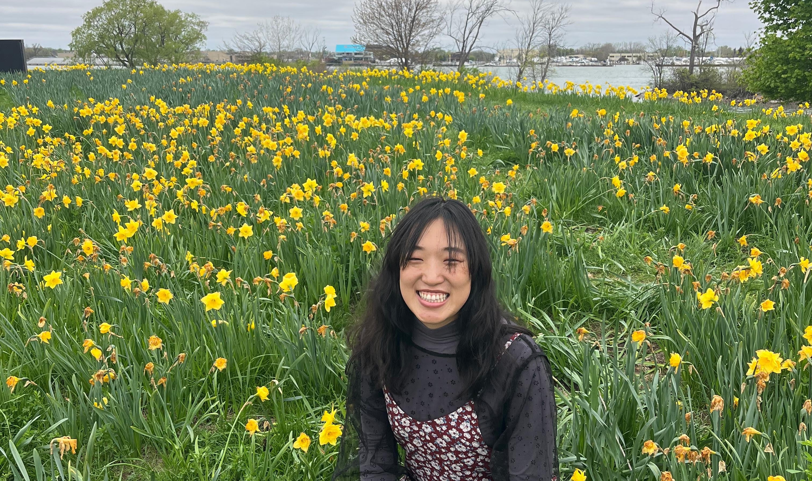

PhD Candidate · Bioinformatics · University of Michigan
Tiffany Wan
I study microbial genomics and antibiotic resistance — building reproducible computational workflows to trace how resistant pathogens evolve and spread, from global surveillance down to the hospital ward.
01About
I am a PhD candidate in Bioinformatics at the University of Michigan and a T32 trainee in the Genome Sciences Training Program.
My work sits at the intersection of microbial genomics, computational epidemiology, and antibiotic-resistance evolution — combining phylogenetics, plasmid analysis, and large-scale sequencing data to understand how resistant organisms emerge and circulate. My background spans medical laboratory science, public-health epidemiology, and bioinformatics across institutions in Taiwan and the United States.
02Education
& Training
& Training
| Institution | Degree | Field | Years |
|---|---|---|---|
| University of Michigan | PhD | Bioinformatics | 2023 – 2028 |
| University of Michigan | MPH | Epidemiology | 2020 – 2022 |
| Chang Gung University 長庚大學 | BSc | Medical Technology & Laboratory Science | 2015 – 2019 |
03Positions &
Appointments
Appointments
- 2024 – 2026T32 Trainee, Genome Sciences Training ProgramNational Human Genome Research Institute
- 2023 – PresentGraduate Research AssistantUniversity of Michigan
- 2022 – 2023Research Laboratory Specialist AssociateMichigan Medicine
- 2020 – 2022Research Assistant — Dr. Joshua PetrieSchool of Public Health, University of Michigan
- 2019 – 2020Research Assistant — Dr. Shin-Ru ShihChang Gung University
- 2018 – 2019Clinical Laboratory Scientist InternChang Gung University
04Honors &
Presentations
Presentations
- 2025Poster PresentationMolecular Mechanisms in Evolution, Gordon Research Conference
- 2024Poster PresentationASM NGS
- 2024Oral PresentationAntibiotic Resistance in Communities & Hospitals Investigator Meeting, CDC
- 2023Oral PresentationASM Microbe
- 2023Poster PresentationApplied Bioinformatics & Public Health Microbiology Conference
- 2020 – 202250% Tuition ScholarshipUniversity of Michigan School of Public Health
Certifications
- 2020 –International Medical Laboratory Scientist (iMLS)ASCP Board of Certification
- 2019 –Medical TechnologistNational Examination Institute of Taiwan
05Other
Interests
Interests
Beyond the lab.
Outside of research, I am enthusiatic about scientific outreach, I am a member of Girl's Who Code, and also a science communication fellow at University of Michigan. In my free time, I am always trying to pick up new hobbies. I enjoy baking, pottery, knitting, playing music and tennis. You can find me either spending time with friends and family or at church.
06Contact
- tifwan@umich.edu
- Scholar
- Google Scholar
- GitHub
- github.com/tifwan